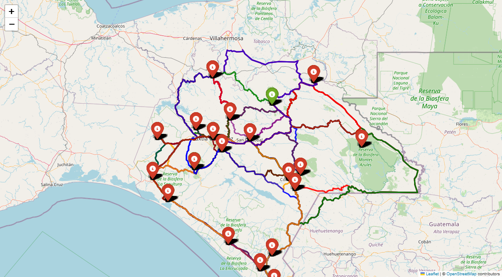

4 Metodología
En esta sección se describe
4.1 Recolección de datos
El estudio utilizó dos fuentes principales de datos geoespaciales:
- Datos de rutas:
- Obtenidos mediante la API de Open Source Routing Machine (OSRM).
- El formato usado son Coordenadas geográficas en WGS84 (
[latitud, longitud]) para cada punto de la ruta.
- Datos de elevación:
- La información utilizada proviene del Modelo Digital de Elevación (DEM) generado por la misión Shuttle Radar Topography Mission (SRTM) de la NASA, disponible en NASA Earthdata (https://earthdata.nasa.gov/). Los datos cuentan con una resolución espacial de 30 metros y se distribuyen en teselas de \(1^{\circ} \times 1^{\circ}\) de latitud y longitud. Cada archivo ráster SRTM está conformado por una malla regular de celdas (pixeles), en la cual cada celda almacena un valor de elevación del terreno expresado en metros sobre el nivel del mar (m s. n. m.). Para cubrir áreas de mayor extensión, como un estado, un país o una región montañosa, es necesario integrar estas teselas, lo que permite generar una capa continua y sin discontinuidades del relieve, denominada mosaico ráster.
4.2 “Cálculo de distancia 3D de rutas geográficas usando datos OSRM y elevación”
Para estimar la longitud real de una carretera considerando las variaciones de altitud del terreno, se utiliza una formulación basada en la distancia geodésica entre puntos sucesivos de una ruta, combinada con la diferencia de elevaciones. Esto permite obtener una distancia tridimensional (3D) más realista, que considera tanto la curvatura terrestre como los cambios topográficos.
Sea una ruta discretizada por \(N\) puntos geográficos con coordenadas: \(P_i= (\phi_i, \lambda_i\)) para \(i=1, \cdots, N\) donde: \(\phi_i\) es la latitud de punto \(i\) y \(\lambda_i\) es la longitud del punto \(i\). La distancia superficial (2D) entre dos puntos consecutivos se calcula utilizando la fórmula de Vincenty o usando elipsoide WGS84 (World Geodetic System 1984), el cual se calcula mediante la siguiente expresión \[ d_i^{2D}:= GeodInv(\phi_{i-1}, \lambda_{i-1}, \phi_i, \lambda_i), \]
que representa la distancia geodésica 2D entre los puntos \(P_{i-1}\) y \(P_{i},\) calculada sobre la superficie de la Tierra.
Por otro lado, para estimar la distancia real de una carretera, considerando las variaciones del terreno (con elevación), se considera la ruta como una secuencia de puntos geográficos \(P_i= (\phi_i, \lambda_i\)) y \(h_i\) la elevación en metros sobre el nivel del mar del punto \(i,\) extraÍda del mosaico ráster de altitudes mediente la interpolacion espacial. La distancia entre dos puntos consecutivos se calcula como \[ d_i^{3D} := \sqrt{(d_i^{2D})^2+(\Delta h_i)^2}, \] siendo \(\Delta h_i= h_i-h_{i-1}\) el cambio de altitud entre dos puntos consecutivos.
La distancia total proyectada (2D) y la distancia real sobre el terreno (3D) son respectivamente \[ D^{(2D)}:= \sum_{i=1}^{N-1} d_i^{(2D)}, \] y \[ D^{(3D)}:= \sum_{i=1}^{N-1} d_i^{(3D)}. \]
Code
from google.colab import drive
import requests
import csv
import time
from urllib.parse import quote
import folium
import math
import rasterio
from rasterio.merge import merge
from shapely.geometry import LineString
import numpy as np
from pyproj import Geod
import matplotlib.pyplot as plt
import pandas as pd
from IPython.display import display
# Montar Google Drive
drive.mount('/content/drive')
# Instalar librerías necesarias
!pip install rasterio geopandas pyproj folium
# Configuración de ciudades
ciudades = [
"Acacoyagua", "Acala", "Acapetahua", "Aldama", "Altamirano", "Amatán",
"Amatenango de la Frontera", "Amatenango del Valle", "Ángel Albino Corzo",
"Arriaga", "Bejucal de Ocampo", "Bella Vista",
"Benemérito de las Américas","Berriozábal", "Bochil", "Cacahoatán",
"Capitán Luis Ángel Vidal", "Catazajá", "Chalchihuitán", "Chamula",
"Chanal", "Chapultenango","Chenalhó", "Chiapa de Corzo", "Chiapilla",
"Chicoasén", "Chicomuselo", "Chilón","Cintalapa de Figueroa", "Coapilla",
"Comitán de Domínguez", "Copainalá", "El Bosque", "El Parral",
"El Porvenir", "Emiliano Zapata", "Escuintla", "Francisco León",
"Frontera Comalapa", "Frontera Hidalgo", "Honduras de la Sierra",
"Huehuetán", "Huitiupán", "Huixtán", "Huixtla", "Ixhuatán",
"Ixtacomitán", "Ixtapa", "Ixtapangajoya", "Jiquipilas", "Jitotol",
"Juárez", "La Concordia", "La Grandeza", "La Independencia",
"La Libertad", "La Trinitaria", "Larráinzar", "Las Margaritas",
"Las Rosas", "Mapastepec", "Maravilla Tenejapa", "Marqués de Comillas",
"Mazapa de Madero", "Mazatán", "Metapa", "Mezcalapa" "Mitontic",
"Montecristo de Guerrero", "Motozintla", "Nicolás Ruíz", "Ocosingo",
"Ocotepec", "Ocozocoautla de Espinosa", "Ostuacán", "Osumacinta",
"Oxchuc", "Palenque", "Pantelhó", "Pantepec", "Pichucalco",
"Pijijiapan", "Pueblo Nuevo Solistahuacán", "Rayón", "Reforma",
"Rincón Chamula San Pedro", "Sabanilla", "Salto de Agua",
"San Andrés Duraznal", "San Cristóbal de las Casas", "San Fernando",
"San Juan Cancuc", "San Lucas", "Santiago el Pinar", "Siltepec",
"Simojovel", "Sitalá", "Socoltenango", "Solosuchiapa", "Soyaló",
"Suchiapa", "Suchiate", "Sunuapa", "Tapachula", "Tapalapa", "Tapilula",
"Tecpatán", "Tenejapa", "Teopisca", "Tila", "Tonalá", "Totolapa",
"Tumbalá", "Tuxtla Chico", "Tuxtla Gutiérrez", "Tuzantán", "Tzimol",
"Unión Juárez", "Venustiano Carranza", "Villa Comaltitlán",
"Villa Corzo", "Villaflores", "Yajalón", "Zinacantán"
]
ciudades.sort()
# Funciones auxiliares
def cargar_mosaico_srtm():
archivos_hgt = [
"/content/drive/MyDrive/thesis/chiapas_hgt/N17W094.hgt",
"/content/drive/MyDrive/thesis/chiapas_hgt/N17W093.hgt",
"/content/drive/MyDrive/thesis/chiapas_hgt/N17W092.hgt",
"/content/drive/MyDrive/thesis/chiapas_hgt/N16W095.hgt",
"/content/drive/MyDrive/thesis/chiapas_hgt/N16W094.hgt",
"/content/drive/MyDrive/thesis/chiapas_hgt/N16W093.hgt",
"/content/drive/MyDrive/thesis/chiapas_hgt/N15W094.hgt",
"/content/drive/MyDrive/thesis/chiapas_hgt/N15W092.hgt",
"/content/drive/MyDrive/thesis/chiapas_hgt/N14W093.hgt",
"/content/drive/MyDrive/thesis/chiapas_hgt/N16W091.hgt",
"/content/drive/MyDrive/thesis/chiapas_hgt/N15W093.hgt",
"/content/drive/MyDrive/thesis/chiapas_hgt/N16W092.hgt"
]
src_files = [rasterio.open(f) for f in archivos_hgt]
mosaico, transform = merge(src_files)
for src in src_files:
src.close()
return mosaico, transform
def obtener_coordenadas(ciudad):
url = f"https://nominatim.openstreetmap.org/search?q=
{quote(ciudad+', Chiapas, México')}&format=json"
response = requests.get(url, headers={'User-Agent': 'Mozilla/5.0'})
data = response.json()
if data:
return (float(data[0]['lat']), float(data[0]['lon']))
return None
def obtener_ruta_osrm(coord_origen, coord_destino):
lon1, lat1 = coord_origen[1], coord_origen[0]
lon2, lat2 = coord_destino[1], coord_destino[0]
url = f"http://router.project-osrm.org/route/v1/driving/{lon1},{lat1};
{lon2},{lat2}?overview=full&geometries=geojson"
try:
response = requests.get(url)
data = response.json()
if data['code'] == 'Ok':
distancia = data['routes'][0]['distance']
duracion = data['routes'][0]['duration']
geometria = data['routes'][0]['geometry']['coordinates']
return distancia, duracion, [(lat, lon) for lon, lat in geometria]
except Exception as e:
print(f"Error OSRM: {e}")
return None, None, None
def calcular_distancia_3d_ruta(mosaico, transform, ruta_coords):
geod = Geod(ellps="WGS84")
distancia_3d = 0
distancia_2d = 0
elevaciones = []
for coord in ruta_coords:
lon, lat = coord[1], coord[0]
try:
col, row = ~transform * (lon, lat)
elev = mosaico[0, int(row), int(col)]
elevaciones.append(elev)
except:
elevaciones.append(np.nan)
for i in range(1, len(ruta_coords)):
lon1, lat1 = ruta_coords[i-1][1], ruta_coords[i-1][0]
lon2, lat2 = ruta_coords[i][1], ruta_coords[i][0]
elev1, elev2 = elevaciones[i-1], elevaciones[i]
if np.isnan(elev1) or np.isnan(elev2):
continue
_, _, dist2d = geod.inv(lon1, lat1, lon2, lat2)
delta_elev = elev2 - elev1
dist3d = math.sqrt(abs(dist2d**2 + delta_elev**2))
distancia_2d += dist2d
distancia_3d += dist3d
return distancia_2d, distancia_3d, elevaciones
# Proceso principal
mosaico, transform = cargar_mosaico_srtm()
coordenadas = {}
print("Obteniendo coordenadas...")
for ciudad in ciudades:
coord = obtener_coordenadas(ciudad)
if coord:
coordenadas[ciudad] = coord
print(f"{ciudad}: {coord[0]:.4f}, {coord[1]:.4f}")
time.sleep(1)
archivo_salida =
"/content/drive/MyDrive/thesis/ponencia_pagerank_distancia_chiapas
/distancias_chiapas_carreteras_3d_completo.csv"
with open(archivo_salida, "w", newline="",
encoding="utf-8") as file:
writer = csv.writer(file)
writer.writerow(["Origen", "Destino", "Distancia carretera (km)",
"Distancia 3D (km)", "Diferencia (km)", "Tiempo estimado (min)"])
mapa = folium.Map(location=[16.75, -92.62], zoom_start=8)
colores = ['red', 'blue', 'green', 'purple', 'orange', 'darkred']
for i in range(len(ciudades)):
for j in range(len(ciudades)):
if i == j:
continue
origen = ciudades[i]
destino = ciudades[j]
if origen in coordenadas and destino in coordenadas:
print(f"\nCalculando {origen} → {destino}...")
coord_origen = coordenadas[origen]
coord_destino = coordenadas[destino]
distancia_ruta, duracion, ruta_coords =
obtener_ruta_osrm(coord_origen, coord_destino)
if ruta_coords:
dist2d, dist3d, elevaciones =
calcular_distancia_3d_ruta(mosaico, transform,
ruta_coords)
if dist2d > 0 and dist3d > 0:
dist_ruta_km = distancia_ruta/1000
dist3d_km = dist3d/1000
diferencia = dist3d_km - dist_ruta_km
tiempo_min = duracion/60
writer.writerow([origen, destino,
round(dist_ruta_km, 3), round(dist3d_km, 3),
round(diferencia, 3), round(tiempo_min, 1)])
color = colores[(i+j) % len(colores)]
folium.PolyLine(locations=ruta_coords, color=color,
weight=3, opacity=0.7,tooltip=
f"{origen} → {destino}<br>Distancia:
{dist_ruta_km:.1f}km<br>Tiempo:
{tiempo_min:.1f}min").add_to(mapa)
folium.Marker(location=coord_origen, popup=origen,
icon=folium.Icon(color='green')).add_to(mapa)
folium.Marker(location=coord_destino, popup=destino,
icon=folium.Icon(color='red')).add_to(mapa)
time.sleep(1)
print(f"\n Datos guardados en {archivo_salida}")
print(" Mapa actualizado con rutas en ambas direcciones")
# Mostrar mapa directamente en Colab
display(mapa)
# Mostrar CSV resultante
df = pd.read_csv(archivo_salida)
display(df)| Loading ITables v2.4.4 from the internet... (need help?) |
